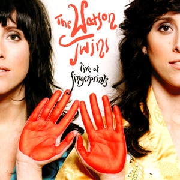
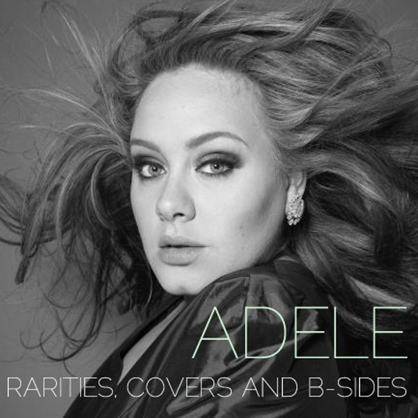
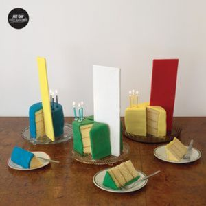
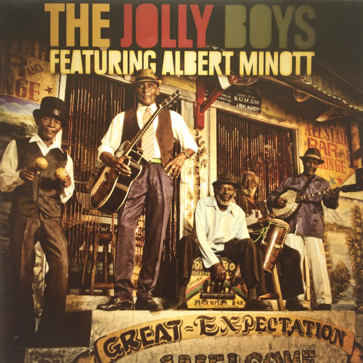
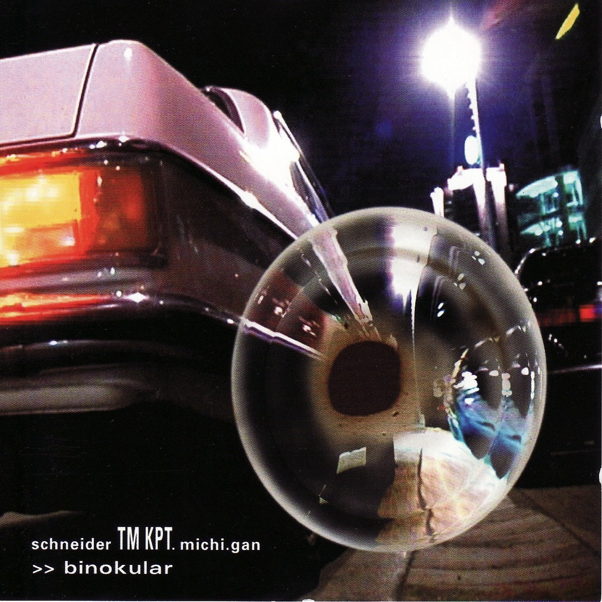
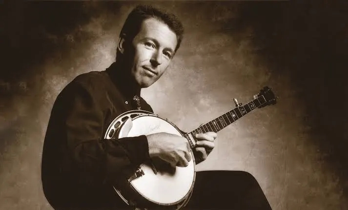
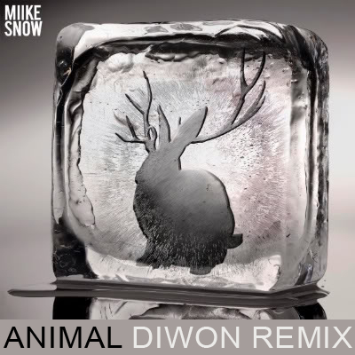

01
01
Proud Mary
Ros Sereysothea – Cambodia Rocks Vol. 1 (2005)
orig. Creedence Clearwater Revival
 02
02
Rehab
The Jolly Boys – Great Expectation (2010)
orig. Amy Winehouse

 04
04
Animal
Sky Ferreira – Soundcloud (2010)
orig. Miike Snow

05Just Like Heaven
The Watson Twins – Live At Fingerprints (2009)
orig. The Cure
06
Time After Time
Julian Lynch – Time After Time (2009)
orig. Madona

07Last Nite
Adele – Rarities, Covers And B-Sides (2008)
orig. The Strokes

08Sexual Healing
Hot Chip – Over And Over (2006)
orig. Marvin Gaye
 09
09
The Killing Moon
Pavement – Major Leagues (1999)
orig. The Cure
 10
10
Crazy (orig. Gnarls Barkley)
Violent Femmes – Crazy (2008)
 11
11
Crazy-in-love
Mélissa Laveaux – Single (2009)
orig. Beyonce

12Riders on the Storm
The Jolly Boys – Great Expectation (2010)
orig. The Doors
 13
13
Walk On By
Isaac Hayes – Hot Buttered Soul (2009)
orig. Dionne Warwick
 14
14
Warning Sign
Local Natives – Gorilla Manor (2009)
orig. Talking Heads

15The Light 3000
Schneider TM featuring Kpt Michigan – Indietronica (2002)
orig. The Smiths
 16
16
Das Model
schrodt & bucsics – s & b sessions
orig. Kraftwerk
 17
17
Waterloo Sunset
David Bowie – Reality (2003)
orig. The Kinks
 18
18
Golden Brown
The Jolly Boys – Great Expectation (2010)
orig. The Stranglers
 19
19
Walk on By
The Stranglers – Greatest Hits 1977-1990 (1989)
orig. Dionne Warwick

20California Dreamin'
Tom Adams – Internet Single (2008)
orig. Mamas and The Papas

21Animals
Miike Snow – Bonna Jamz (2009)
orig. Diwon Remix
 22
22
Sabali
Amadou & Mariam – Chrome Music
orig. Theophilus London Remix